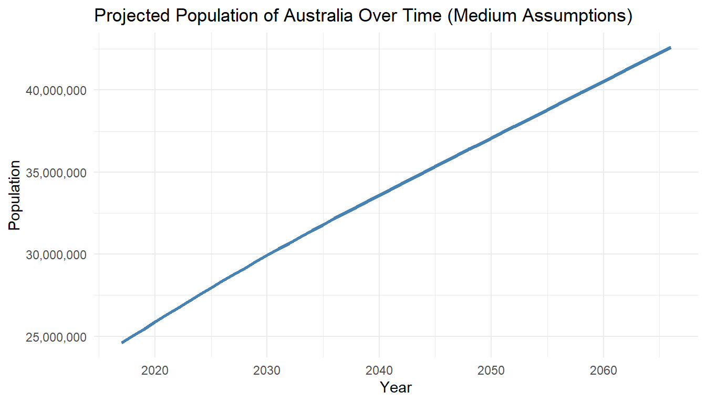
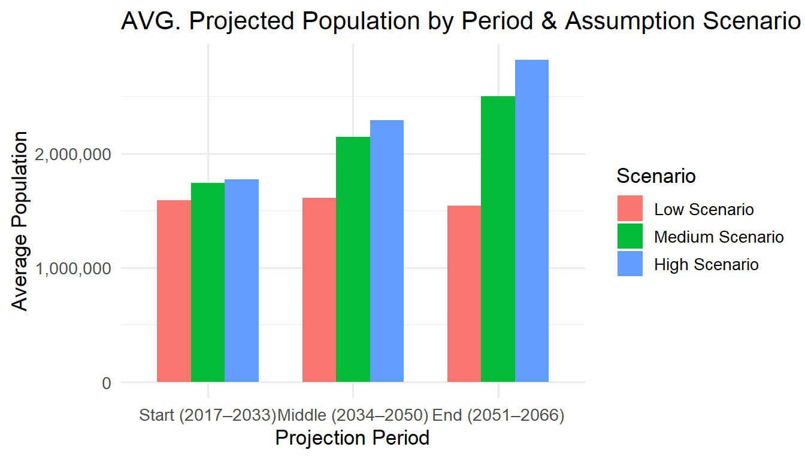

This project investigates Australia’s projected population growth, exploring both national and regional trends across the eight main regions of Australia. Using official projection datasets and demographic assumptions, we pinpoint the influence of fertility, mortality, and migration on future scenarios. Through linear modeling, we quantified and contrasted these factors to reveal how assumptions shape projections. Our results show that migration has the strongest impact on population growth, followed by fertility, with mortality having the least influence.
Introduction
Australia’s population is expected to grow significantly over the coming decades. Understanding this growth is crucial for informing infrastructure, healthcare, education, and housing policies. In this project, we explore:
How is Australia’s total population projected to change over the years?
How is the total population projected to grow across different states and territories over time?
How do different assumptions (fertility, mortality, migration) influence these projections?
Our analysis leverages a single official dataset detailing regional population projections and scenario-based demographic assumptions. A linear modeling framework is applied to quantify the influence of each demographic factor and evaluate projection accuracy across regions. This approach integrates statistical analysis and visualisation to provide a comprehensive view of Australia’s demographic future. The research aims to identify which demographic variables drive the most substantial changes. By comparing alternative projection scenarios, we gain insight into the sensitivity of future growth to changes in policy or global conditions. Our findings emphasise the dominant role of migration, followed by fertility, while mortality has comparatively minimal effect.
library(tidyverse)
── Attaching core tidyverse packages ──────────────────────── tidyverse 2.0.0 ──
✔ dplyr 1.1.4 ✔ readr 2.1.5
✔ forcats 1.0.0 ✔ stringr 1.5.1
✔ ggplot2 3.5.2 ✔ tibble 3.2.1
✔ lubridate 1.9.4 ✔ tidyr 1.3.1
✔ purrr 1.0.4
── Conflicts ────────────────────────────────────────── tidyverse_conflicts() ──
✖ dplyr::filter() masks stats::filter()
✖ dplyr::lag() masks stats::lag()
ℹ Use the conflicted package (<http://conflicted.r-lib.org/>) to force all conflicts to become errors
Based on Figure 1, the population projection analysis follows a clear, step-by-step framework that connects problem definition to results and recommendations. It begins with identifying the key issue: understanding how Australia’s population will change over time under different scenarios. The study recognises that future population levels are influenced by varying rates of fertility, mortality, and migration.
The second step defines the data source and tools used. The analysis is based on the ABS Population Projections dataset from 2017 to 2066. The data includes regional breakdowns, assumption categories, and annual population figures. Tools such as R and libraries like tidyverse are used for cleaning, aggregation, and visualisation.
The core analysis is guided by three research questions: How will Australia’s overall population grow? How will population trends differ across states and territories? How do different demographic assumptions impact these projections? Each of these questions forms a track of analysis.
Results are presented using appropriate charts. National growth over time is visualised with a line chart, showing how population changes annually. State-level comparisons are made with a multi-line chart, allowing direct comparisons between regions. For scenario-based comparisons, a grouped bar chart is used. This chart compares the average population in three periods—Start (2017–2033), Middle (2034–2050), and End (2051–2066)—under three different assumptions: Low, Medium, and High. The scenarios are defined based on combinations of fertility rates, life expectancy, and migration levels.
Finally, the process leads to a conclusion and recommendation section, where key findings are summarised, and implications for planning are discussed. This method ensures a logical flow from question to insight, and allows clear interpretation of complex projection data for policymakers and planners.
ggplot(total_projection, aes(x = Year, y = Projected_Population)) +geom_line(color ="steelblue", linewidth =1.2) +scale_y_continuous(labels = scales::comma) +labs(title ="Projected Population of Australia Over Time (Medium Assumptions)",x ="Year",y ="Population" ) +theme_minimal()#ggsave("figures/fig-total-projection.png", plot = plot_total, width = 7, height = 4, dpi = 300, bg = "white")

Figure 2: Projected population of Australia from 2017 to 2066 under medium fertility, mortality, and migration assumptions. Population is projected to rise to over 40 million by the year 2066 indicating steady long-term growth.
Figure 2 shows a consistent upward trend in Australia’s population. Under medium demographic assumptions, the total population is projected to grow steadily, reaching over 40 million by 2066.
Figure 3: Projected annual population growth rate of Australia from 2017 to 2066 under medium fertility, mortality, and migration assumptions. Growth rate is projected to decline to below 1% by 2066.
Figure 3 shows that while the population grows, the annual growth rate slows over time, falling to below 1% by 2066. This suggests a gradual deceleration in population increase despite overall growth.
Q2. How is the total population projected to grow across different states and territories over time?
Figure 4: Indexed population growth in Australia by region from 2017 to 2066 under medium fertility, mortality, and migration assumptions. Each region’s population is set to 100 in 2017 to compare relative growth.
Figure 4 highlights clear variation across regions. Population growth is fastest in Queensland, Victoria, and New South Wales, while Tasmania and South Australia show slower increases. This suggests uneven demographic pressures and different infrastructure needs across the country.
Q3. How do different assumptions (fertility, mortality, migration) influence these projections?
# Define scenario categories based on assumption combinationsq3 <- processed_data |>mutate(Scenario_Category =case_when( Fertility_Assumption =="High fertility"& Mortality_Assumption =="High life expectancy"& Overseas_Migration =="High NOM"~"High Scenario", Fertility_Assumption =="Medium fertility"& Mortality_Assumption =="Medium life expectancy"& Overseas_Migration =="Medium NOM"~"Medium Scenario", Fertility_Assumption =="Low fertility"& Mortality_Assumption =="Medium life expectancy"& Overseas_Migration =="Zero NOM"~"Low Scenario",TRUE~NA_character_ ) )# Define period labelsq3 <- q3 |>mutate(Period =case_when( Year >=2017& Year <=2033~"Start (2017–2033)", Year >=2034& Year <=2050~"Middle (2034–2050)", Year >=2051& Year <=2066~"End (2051–2066)",TRUE~NA_character_ ) )# Filter valid rows and compute average population by period and scenarioq3_filtered <- q3 |>filter(!is.na(Scenario_Category), !is.na(Period)) |>group_by(Period, Scenario_Category) |>summarise(Avg_Population =mean(Projected_Popuation, na.rm =TRUE), .groups ="drop")# Reorder the factor levels for plottingq3_filtered <- q3_filtered |>mutate(Period =factor(Period, levels =c("Start (2017–2033)", "Middle (2034–2050)", "End (2051–2066)")),Scenario_Category =factor(Scenario_Category, levels =c("Low Scenario", "Medium Scenario", "High Scenario")) )# Step 6: Plot grouped bar chartggplot(q3_filtered, aes(x = Period, y = Avg_Population, fill = Scenario_Category)) +geom_col(position ="dodge", width =0.7) +labs(title ="AVG. Projected Population by Period & Assumption Scenario",x ="Projection Period",y ="Average Population",fill ="Scenario" ) +scale_y_continuous(labels = scales::comma) +theme_minimal(base_size =13)#ggsave("figures/fig-assumption-scenario.png", plot = plot_total, width = 7, height = 4, dpi = 300, bg = "white")

Figure 5: Projected population of Australia from 2017 to 2066 under medium fertility, mortality, and migration assumptions. The High scenario consistently projects the largest population, driven by higher fertility and migration, while the Low scenario shows slower growth due to reduced births and zero net migration.
Figure 5 compares three demographic scenarios. While all scenarios begin similarly, projections diverge over time. The High scenario leads to the largest population by 2066, driven by higher fertility and migration. In contrast, the Low scenario results in slower growth, showing the strong influence of policy and global trends on long-term outcomes.
Discussion, Conclusion and Recommendation
Discussion
The population projection analysis underscores a crucial insight: Australia is poised for sustained population growth, but the pace and distribution of this growth are highly variable depending on regional and demographic factors. Nationally, the population is expected to surpass 40 million by 2066 under medium assumptions, showing steady long-term growth. However, the annual growth rate is projected to decline gradually, falling below 1% by the projection’s end. Regional differences are prominent, with faster growth in Victoria, New South Wales, and Queensland, while smaller states experience slower increases. Moreover, varying assumptions about fertility, mortality, and migration create distinct population futures, highlighting the significant impact of policy and social trends on Australia’s demographic trajectory.
The population projection analysis underscores a crucial insight: Australia is poised for sustained population growth, but the pace and distribution of this growth are highly variable depending on regional and demographic factors.
Firstly, the national upward trend in population is consistent across all assumption scenarios, though the growth rate slows over time, dropping below 1% by 2066. This tapering growth may reflect demographic maturity, where lower fertility rates and aging populations contribute to deceleration despite net migration.
Secondly, state and territory-level comparisons reveal stark differences in regional population trajectories. Victoria has consistently maintained the leading position in terms of indexed growth under medium assumptions, reflecting its enduring strength as both an economic hub and a major destination for internal and international migration. However, from 2030 onwards, Western Australia shows a notable acceleration in growth, indicating its rising prominence as an emerging economic and migration magnet. In contrast, states like Tasmania and South Australia continue to experience comparatively slower growth, which may pose challenges in sustaining economic vitality and public service provision amid relatively stagnant populations. These regional disparities highlight the importance of implementing place-based planning strategies tailored to the distinct demographic and economic contexts of each state.
Thirdly, the influence of demographic assumptions is significant. The differences between low, medium, and high scenarios amplify as projections move further into the future. This sensitivity analysis shows that migration policies and fertility trends are pivotal levers that can drastically alter Australia’s demographic future. For instance, a high-migration, high-fertility scenario leads to a considerably larger population by 2066 than a conservative one. This raises questions about the country’s infrastructure readiness, environmental sustainability, and social cohesion under varying scenarios.
Conclusion
Australia’s population is projected to grow significantly over the next five decades, but this growth will not be evenly spread across regions nor equally influenced by demographic factors. Nationally, the population is on track to exceed 40 million by 2066 under medium assumptions, though regional growth will be uneven.
The study confirms three major takeaways:
Sustained national growth—but at a declining rate.
Regional disparities in growth, with populous and economically active states growing faster.
Critical dependency on assumptions—particularly fertility and migration rates—that shape long-term projections.
These findings carry profound implications for urban planning, public service delivery, environmental resource management, and economic development strategies.
Recommendation
Targeted regional strategies: Regional differences call for differentiated planning. States like Tasmania and South Australia might need economic incentives or migration programs to stimulate growth, while high-growth areas like Victoria should prioritize housing, transport, and social infrastructure to prevent strain.
Demographic monitoring & Policy adjustments: Real-time demographic data (fertility, migration trends, mortality) must be monitored closely. Adjustments to immigration quotas, family support policies, and healthcare planning can help steer population growth toward sustainable and desirable outcomes.
Policy-makers need to challenge projection assumptions: Are fertility rates likely to change due to policy or social shifts? Could unexpected migration events (e.g. geopolitical crises) alter projections? Besides, they should use comparative frameworks from other nations experiencing similar demographic transitions (e.g., Canada, the UK) to benchmark potential outcomes.
Further research recommended includes:
Investigate the implications of population aging in slower-growing states.
Model how external shocks (e.g. pandemics, climate migration) might impact current projections.
Study correlations between population growth and environmental impact at a regional level.
Reference
Australian Bureau of Statistics. (2023). Population Projections, Australia, 2017 to 2066 (Data Explorer Table). Retrieved May 2025, Access data here
Wickham, H. (2016). ggplot2: Elegant graphics for data analysis. Springer-Verlag New York. https://ggplot2-book.org
Xie Y (2024). knitr: A General-Purpose Package for Dynamic Report Generation in R. R package version 1.49, https://yihui.org/knitr/.
Wickham H, Averick M, Bryan J, Chang W, McGowan LD, François R, Grolemund G, Hayes A, Henry L, Hester J, Kuhn M, Pedersen TL, Miller E, Bache SM, Müller K, Ooms J, Robinson D, Seidel DP, Spinu V, Takahashi K, Vaughan D, Wilke C, Woo K, Yutani H (2019). “Welcome to the tidyverse.” Journal of Open Source Software, 4(43), 1686. doi:10.21105/joss.01686 https://doi.org/10.21105/joss.01686.